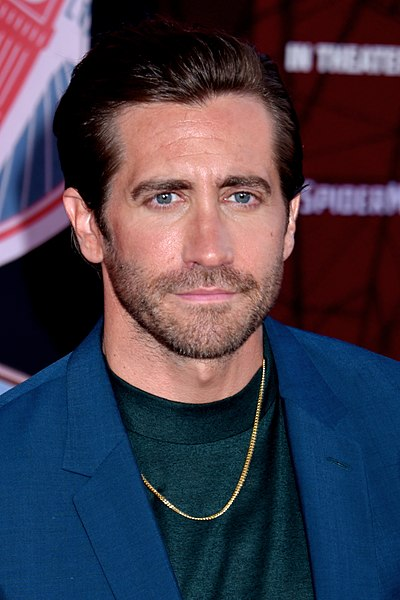
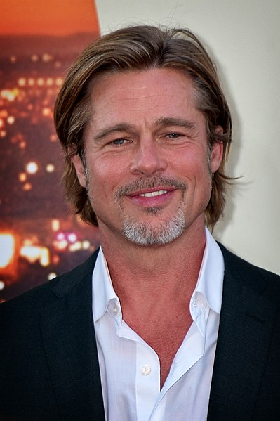

Actores
Aqui vamos a poder apreciar los mejores trabajos de cada actor.
Al Pacino

Nombre completo: Alfredo James Pacino.
Nacimiento: 25 de abril de 1940 en Nueva York, Estados Unidos.
Al Pacino es un famoso actor conocido por sus icónicos papeles en películas como "El Padrino" (1972) y "Esencia de mujer" (1992), por el cual ganó un Premio de la Academia. Nacido en el Bronx, Nueva York, mostró su talento actoral desde joven. A lo largo de su carrera, ha dejado una huella indeleble en el cine y el teatro, convirtiéndose en una leyenda de la actuación.Jake Gyllenhaal
Nombre completo: Jacob Benjamin Gyllenhaal.
Nacimiento: 19 de diciembre de 1980 en Los Ángeles, California.
Jake Gyllenhaal es conocido por su versatilidad y ha participado en películas exitosas como "Brokeback Mountain" (2005) y "Nightcrawler" (2014). Su talento actoral le ha valido múltiples nominaciones a premios importantes.Brad Pitt
Nombre completo: William Bradley Pitt.
Nacimiento: 18 de diciembre de 1963 en Shawnee, Oklahoma.
Brad Pitt es un famoso actor y productor de cine. Alcanzó la fama en la década de 1990 con películas como "Thelma & Louise" y ha continuado protagonizando éxitos de taquilla como "Fight Club" y "Inglourious Basterds". También es un productor exitoso a través de Plan B Entertainment, y ha recibido premios de la Academia por su actuación en "12 Years a Slave". Además, es conocido por su trabajo humanitario y activismo social. Brad Pitt es una de las figuras más influyentes en la industria del entretenimiento.Christian Bale
Nombre completo: Christian Charles Philip Bale.
Nacimiento: 30 de enero de 1974 en Haverfordwest, Gales.
Christian Bale es un versátil actor conocido por sus notables transformaciones físicas en películas como "El Maquinista" y su icónico papel como Batman en la trilogía "The Dark Knight". Ha recibido premios de la Academia, incluyendo uno por "The Fighter". Bale es admirado por su dedicación y versatilidad en la actuación, consolidándose como una figura destacada en Hollywood.